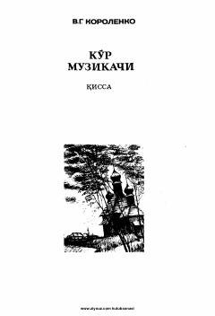

KMTug‘ma ko‘r bolaning musiqiy iste’dodi va ruhiy dunyosi haqidagi ta’sirli qissa.
Ushbu asar tug‘ma ko‘r bo‘lib dunyoga kelgan bolaning hayoti va uning musiqaga bo‘lgan iste’dodi haqida hikoya qiladi. Muallif asar qahramonining ruhiy kechinmalari va dunyoni idrok etish jarayonini chuqur psixologik tahlil orqali yoritib beradi.